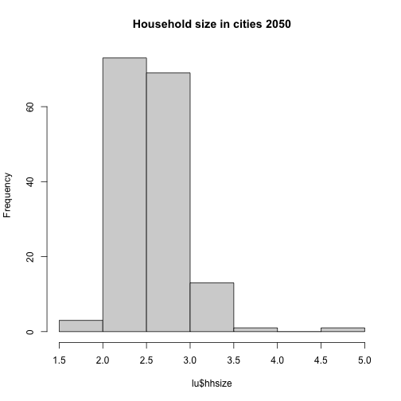
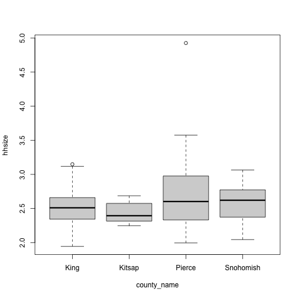

R Fundamentals II
More plots and writing data
Learning Objectives
- To be able to visualize data using simple plots
Boxplot
Let’s bring in a dataset with multiple land use indicators from 2050, and merge it with city names:
lu <- read.csv(file="data/indicators2050.csv")
lu <- merge(lu, cities, by="city_id", all=TRUE)
summary(lu) city_id households population employment
Min. : 1.00 Min. : 0 Min. : 0 Min. : 0.0
1st Qu.: 41.00 1st Qu.: 474 1st Qu.: 1198 1st Qu.: 309.9
Median : 82.00 Median : 3936 Median : 9952 Median : 2692.5
Mean : 82.79 Mean : 15031 Mean : 35532 Mean : 20784.0
3rd Qu.:122.00 3rd Qu.: 13976 3rd Qu.: 33316 3rd Qu.: 13057.7
Max. :173.00 Max. :505387 Max. :982391 Max. :871244.0
city_name county_id county_name
Length:161 Min. :33.00 Length:161
Class :character 1st Qu.:33.00 Class :character
Mode :character Median :53.00 Mode :character
Mean :46.98
3rd Qu.:61.00
Max. :61.00
Say we want to look at the distribution of the average household sizes by counties. First, create a column for household size:
city_id households population employment city_name county_id
9 9 505387 982390.65316 871244.0433 Seattle 33
52 52 112 220.23109 68.0121 Skykomish 33
76 77 6894 13754.30315 13042.9198 Gig Harbor 53
135 136 1722 3520.86640 130.6559 Woodway MUGA 61
81 82 876 1810.73834 650.8074 Ruston 53
154 163 24 50.57888 0.0000 Roy PAA 53
county_name hhsize
9 King 1.943838
52 King 1.966349
76 Pierce 1.995112
135 Snohomish 2.044638
81 Pierce 2.067053
154 Pierce 2.107453
city_id households population employment city_name county_id
148 157 204 663.70020 7856.67975 Frederickson 53
152 161 4 13.21500 11.51667 Pacific PAA 53
74 75 4250 14641.94521 19597.32941 JBLM 53
143 152 6 21.44813 0.00000 Carbonado PAA 53
155 164 10 49.25578 0.00000 South Prairie PAA 53
133 134 0 0.00000 8332.60705 PAINE FIELD AREA 61
county_name hhsize
148 Pierce 3.253432
152 Pierce 3.303750
74 Pierce 3.445164
143 Pierce 3.574689
155 Pierce 4.925578
133 Snohomish NaN
Second, create a histogram for all cities, and a box plot by counties:


Saving plots
You can save a plot from within RStudio using the ‘Export’ button in the ‘Plot’ window. This will give you the option of saving as a .pdf or as .png, .jpg or other image formats.
Sometimes you will want to save plots without creating them in the ‘Plot’ window first. Perhaps you want to make a pdf document with multiple pages: each one a different plot, for example. Or perhaps you’re looping through multiple subsets of a file, plotting data from each subset, and you want to save each plot, but obviously can’t stop the loop to click ‘Export’ for each one.
In this case you can use a more flexible approach. The function pdf creates a new pdf device. You can control the size and resolution using the arguments to this function.
pdf("myplot.pdf", width=12, height=4)
par(mfrow=c(1,2))
hist(lu$hhsize)
boxplot(hhsize ~ county_name, lu)
# You then have to make sure to turn off the pdf device!
dev.off()Open up this document and have a look.
The commands jpeg, png etc. are used similarly to produce documents in different formats.